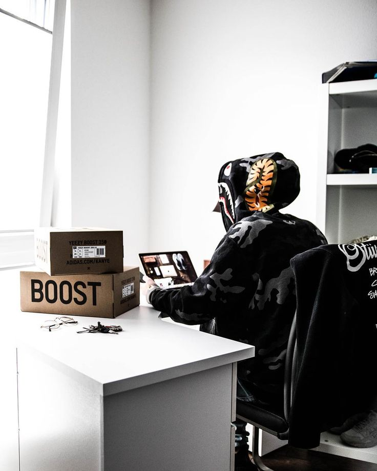
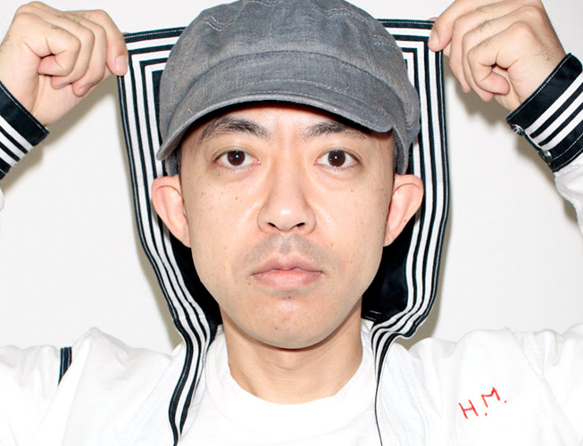

NIGO can be looked at as the person who was able to transcend streetwear
across cultures and continents — he started Bape in 1993 in Japan’s Urahara
neighborhood, which is considered to be the birthplace of Japanese streetwear.
From there, while it took some time, the DJ/producer/entrepreneur was able to
propel A Bathing Ape into mainstream status.


During the 2000s many of hip-hop’s
most high-profile artists such as Lil Wayne, Pharrell Williams, and Kanye West
adopted the brand’s flamboyant fashions. Soon after, young style-minded
consumers also wanted to dress like their favorite rappers, donning the brand’s
signature shark hoodies, purple camouflage tees and multicoloured Bapesta
sneakers.
Nigo: founder of A Bathing Ape, Bape
If there was any evidence to Bape’s reach and longevity, the newer
crop of massively influential rap artists like the ASAP Mob, Kid Cudi and Future
can be seen wearing pieces from its seasonal collections. And if you visit its
online shops, you can witness a bulk of its the products always selling out,
even at such hefty price points.